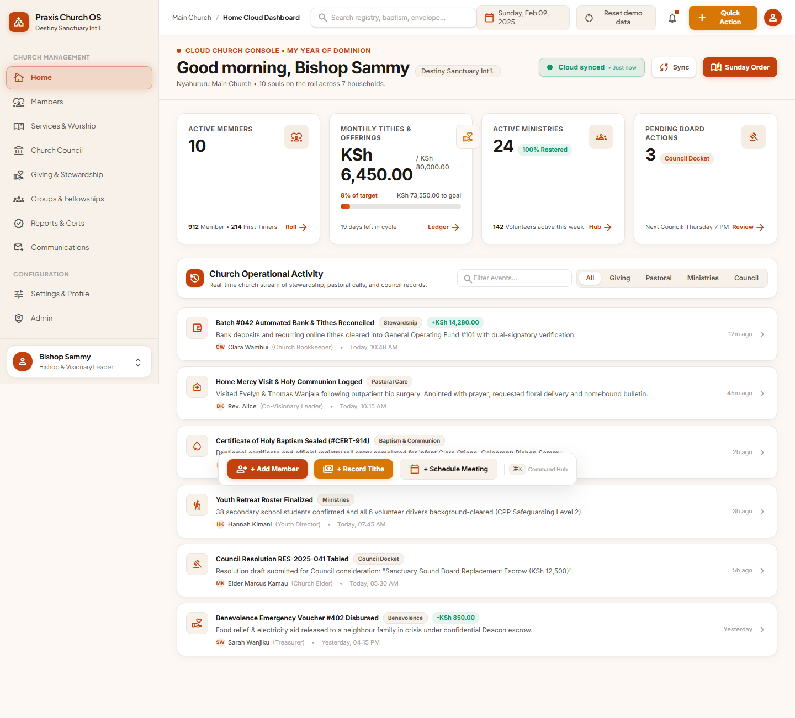

Click-through prototype
A church management console, built around one real church.
Destiny Sanctuary Int'L, Nyahururu — their service times, their ministries, their conferences.
One console for the whole church office: the believers' register, service planning and attendance, tithes and offerings in Kenyan shillings, certificates, the conference calendar, and the communications that keep everyone in step. This is the blueprint I'm building from — every screen is there to click through, with no account and no server behind it. It isn't a picture: enrol a member or log an envelope and the register, the giving totals and the dashboard all move with you.
The sign-in details are already filled in — one click gets you to the console.

What the console covers
Ten sections, each with its own screens — the register, the service, the money, the records and the announcements, in one place instead of five notebooks and a spreadsheet.
-
Home
The day at a glance: attendance, giving, what's next on the calendar and the tasks waiting on someone.
-
Members & Believers
The church register — add a member, find them, send them to Trash and restore them, and the households they belong to.
-
Services & Worship
The Sunday running order, attendance and census, who is serving, and the report each service leaves behind.
-
Giving & Stewardship
Tithes, offerings, project funding, welfare and charity in Kenyan shillings — log an envelope and every total, the dashboard's included, moves with it.
-
Groups & Fellowships
The seven departments, who leads them, and the volunteers who carry them.
-
Reports & Certificates
Baptism, dedication, matrimony and discipleship records, printed ready for the church stamp.
-
Communications
Announcements, broadcasts, the conference calendar, prayer requests and birthdays.
-
Church Council
Dockets and resolutions, and the budget every department reports its spending against.
-
Settings & Profile
The church's own profile — contact details, service times, vision, mission and core values.
-
Admin
Users and their rights, the recycle bin, and the finance audit trail.
The records are mock, but the church isn't: the service times, the seven departments, the four national conferences and the contact details all come from Destiny Sanctuary's own published pages.
Amounts read in Kenyan shillings, and the console's clock sits inside the 2025 cycle so the conferences and reports read as upcoming. It is one HTML file that runs entirely in your browser: no account, no server, and nothing sent anywhere. What you add or remove is remembered in your own browser only, and Reset demo data in the header puts the church's original records back.